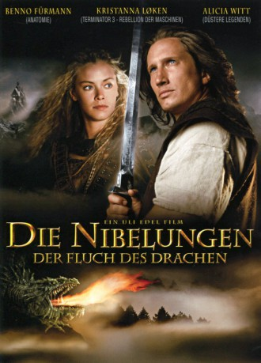

#4612 Die Nibelungen
 
 IMDB-Wertung: 6.7 / 10
IMDB-Wertung: 6.7 / 10  Metascore: 0
Metascore: 0 
Prinz Siegfried ist vier Jahre alt, als die Sachsen das Königreich Xanten angreifen und seine Eltern ermorden. Der Schwertschmied Eyvind wird sein Ersatzvater. 15 Jahre später ist Siegfried einer der besten Waffenschmiede Germaniens, als eines Nachts ein Meteor vom Himmel fällt. Die Neugierde treibt ihn an den Ort des Einschlags, wo er Brunhild zum ersten Mal begegnet. Nach einem heftigen Kampf um den Meteor fühlen sich die beiden plötzlich magisch zueinander hingezogen ...
Jahr: 2004
Dauer: 90 Minuten
FSK: 6
Land: Deutschland Studio: Sat.1Tonspuren:
Untertitel:
Auflösung: SD (640x368) Größe: 700 MB
Genre: Action, Drama, Abenteuer, Fantasy
Regisseur: Uli Edel
Drehbuch: Brian DeCubellis
Soundtrack:
Darsteller:
 Benno Fürmann als Eric / Siegfried
Benno Fürmann als Eric / Siegfried Kristanna Loken als Brunhild
Kristanna Loken als Brunhild Alicia Witt als Kriemhild
Alicia Witt als Kriemhild Julian Sands als Hagen
Julian Sands als Hagen Samuel West als King Gunther
Samuel West als King Gunther Max von Sydow als Eyvind
Max von Sydow als Eyvind Robert Pattinson als Giselher
Robert Pattinson als Giselher Götz Otto als King Thorkwin
Götz Otto als King Thorkwin Ralf Moeller als King Thorkilt
Ralf Moeller als King Thorkilt- Tamsin MacCarthy als Queen Siegland
- Dean Slater als Dankwart
 Dan Hirst als Saxon Messenger , uncredited
Dan Hirst als Saxon Messenger , uncredited Mavie Hörbiger als Lena
Mavie Hörbiger als Lena- Aletta Bezuidenhout als Hallbera
- Sean Higgs als Alberich
- Leonard Moss als King Siegmund
- Ryan Slabbert als Siegfried, 3 Years
- Richard Farmer als Nibelung Ancient
- Richard Thomson als Saxon Horseman 1
- Anton Moon als Saxon Horseman 2
- Claire Berlein als Peasant Woman , uncredited
- Iain Bruce als Burgund Gate Guard , uncredited
- Guy de Lancey als Burgund Sentry , uncredited
- Bart Fouche als Crew Chief , uncredited
- Jonathan Hearns als Burgund Soldier , uncredited
- Peter Krummeck als Counselor #2 , uncredited
- Johan Malherbe als Burgund Priest , uncredited
- Jeremy Phillips als Carsten , uncredited
- Jonathan Pienaar als Saxon Rebel , uncredited
Datei: X:\3-Trilogie(N-Z)\Nibelungen\Nibelungen - Teil 1, Die (2004, FSK6, 640x368).avi seit 24.10.2016
Festplatte: HD Collection-3(N-Z)-6(A-Z)
 Es gibt insgesamt 8 Filme in der Gruppe '3-Trilogie(N-Z)\Nibelungen'
Es gibt insgesamt 8 Filme in der Gruppe '3-Trilogie(N-Z)\Nibelungen'